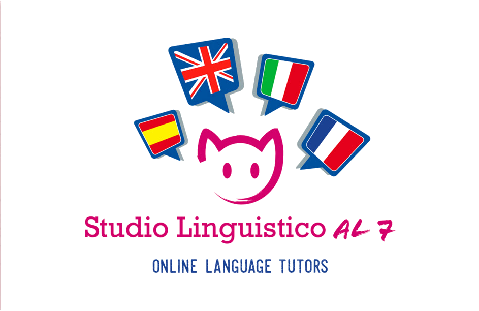
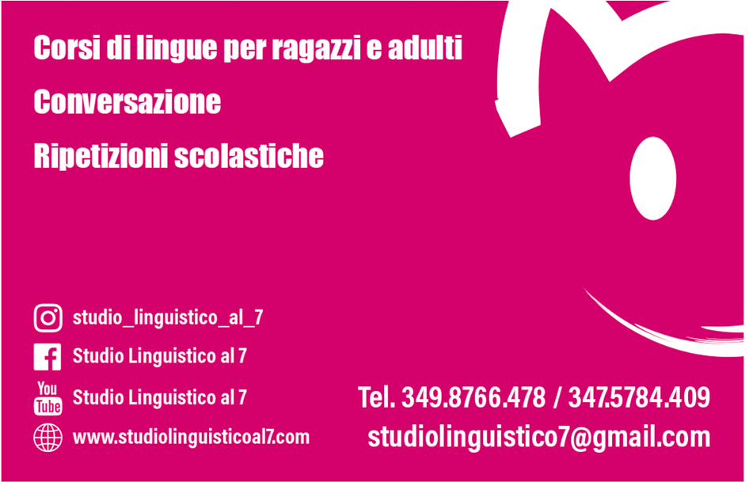
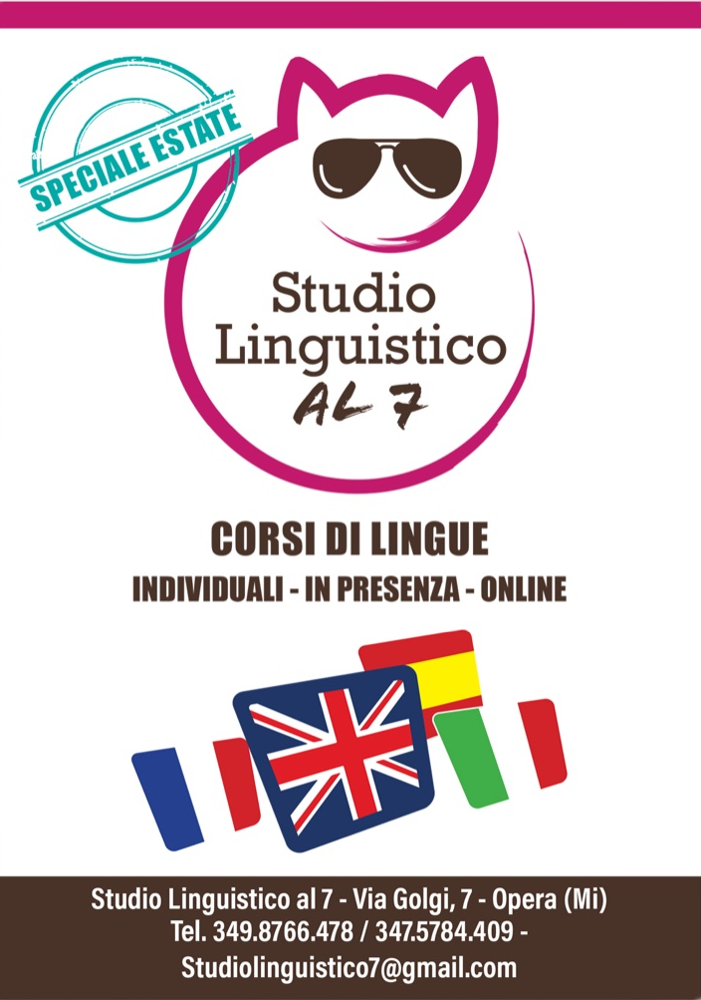
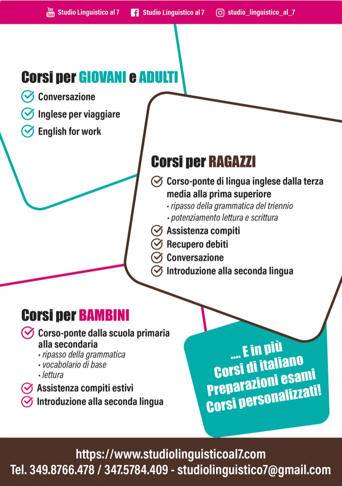

Studio linguistico al 7
Branding e campagneBiglietto da visita, volantino estivo e gestione dei social per uno studio di lingue per ragazzi e bambini: partendo da un’identità già esistente, ho costruito supporti colorati e coerenti con il brand. Il volantino ha portato nuovi clienti allo studio.


Il brand
L’identità dello studio, con il logo del gatto, le bandiere e i colori, era già stata creata da terzi. Ho preso in mano tutta la brand guide e l’ho adattata ai nuovi supporti, mantenendo lo stile del marchio.
I colori li ha voluti il cliente: lavorando con ragazzi e bambini cercava qualcosa di molto colorato. Il mio lavoro è stato tenerli coerenti con il brand.
Biglietto e volantino
Ho costruito il biglietto da visita nel 2023 e il volantino “Speciale estate” nel 2025. Nel volantino i corsi sono divisi per pubblico (giovani e adulti, ragazzi, bambini), ognuno con il suo colore, per far trovare subito a ciascuno quello che cerca.
Entrambi sono stati stampati e sono già in distribuzione. Il cliente mi ha riferito che il volantino gli ha portato nuovi clienti.


I social
Dal 2026 gestisco i profili social dello studio, soprattutto Instagram, il canale principale. Creo contenuti per attirare l’attenzione e possibili nuovi clienti, sempre nel rispetto dei colori e della grafica del brand.